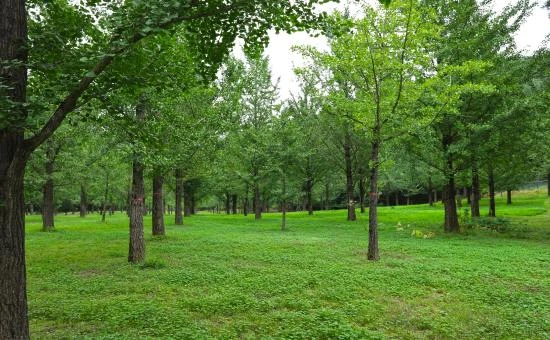
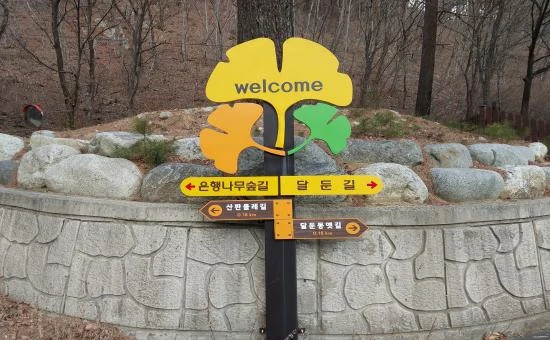

▲ 홍천 은행나무숲의 실제 가을철 현장 사진. 5m 간격으로 정렬 식재된 은행나무 약 2,000그루가 10월이면 이렇게 황금빛으로 물든다 사진=홍천군청
1. 1년 중 딱 한 달, 10월에만 열린다
강원 홍천군 내면 광원리 686-4에 있는 '홍천 은행나무숲'은 해마다 10월 한 달 동안만 일반에 개방되는 사설(私設) 숲이다. 약 4만㎡(1만2,000여 평) 부지에 개방 시간은 오전 10시부터 오후 5시까지이며, 입장료는 무료다. 나머지 11개월은 문을 닫는 개인 소유의 숲이라 정확한 개방 시작·종료일은 그해 단풍 상황에 맞춰 홍천군청 문화관광포털 공지를 통해 안내된다. 실제로 2025년에는 10월 3일부터 11월 2일까지 꼭 31일간 문을 열었는데, 이처럼 매년 날짜가 조금씩 달라지므로 방문 전 반드시 그해 공지를 확인해야 한다. 문의는 홍천군청(033-433-1259)으로 하면 된다.
▲ 5m 간격으로 정렬 식재된 은행나무 사이 길. 노랗게 물든 잎이 파도처럼 일렁인다고 해서 찾는 이들이 늘었다 사진=홍천군청
2. 아내를 위해 한 그루씩 심은 30년의 기록
이 숲은 관에서 조성한 관광지가 아니라, 한 개인이 30여 년에 걸쳐 손수 가꾼 사유림(私有林)이다. 1985년, 농장 주인이 오대산 자락의 삼봉약수 효능을 듣고 병약한 아내의 건강 회복을 바라며 은행나무를 한 그루씩 심기 시작한 것이 그 시작이다. 이후 25년 동안은 외부에 전혀 공개하지 않고 가꾸다가, 2010년부터 매년 10월 한 달만 무료로 개방하기 시작했다. 입소문이 퍼지면서 개방 이후 해마다 10만 명이 넘는 방문객이 다녀가는 가을 명소로 자리 잡았고, 개방 기간에는 인근 주민들이 감자부침·도토리묵 같은 토속 먹거리를 파는 좌판도 선다.
▲ 홍천 은행나무숲 입구의 실제 안내판. 개방 기간에만 이 표지판 너머로 숲길이 열린다 사진=홍천군청
3. 약 2,000그루가 만드는 황금빛 풍경
숲을 채운 은행나무는 약 2,000여 그루로, 5m 간격으로 촘촘히 줄지어 심겨 있다. 10월 노랗게 물든 잎이 나무마다 가득 들어차면, 바람이 불 때마다 잎이 흩날리며 마치 황금빛 물결이 이는 듯한 풍경을 만든다. 대한민국 구석구석(한국관광공사)은 이곳을 '노란빛 일렁이는 비밀스런 가을 명소'로 소개하고 있다. 단풍이 절정에 이르는 정확한 날짜는 그해 기온에 따라 달라지므로, 방문 직전 홍천군청 공지나 현지 문의로 확인하는 것이 좋다.

▲ 같은 숲을 비개방 기간인 여름철에 촬영한 모습. 잎이 초록일 때도 5m 간격의 정렬 식재 구조가 뚜렷이 드러난다 사진=홍천군청
4. 오대산 자락, 삼봉약수와 함께 도는 코스
은행나무숲이 있는 내면 광원리 일대는 오대산과 계방산이 가까운 산간 지역이다. 인근에는 홍천9경 중 하나로 꼽히는 삼봉약수와 구룡령이 있고, 가칠봉·국립삼봉자연휴양림도 멀지 않아 함께 둘러보기 좋다. 삼봉약수는 은행나무숲과 같은 광원리(산197-1)에 있으며, 국립삼봉자연휴양림 안에 자리한 탄산약수다. 철이온·탄산이온 등 15가지 성분이 함유돼 위장병·빈혈 등에 효험이 있다고 알려져 있고, 2011년 국가유산청(옛 문화재청) 천연기념물로 지정됐다. 숲을 조성하게 된 계기가 된 곳이기도 하다. 산길로 이어지는 구간이 많은 만큼, 걷기 편한 신발을 준비하는 편이 낫다.

▲ 숲 인근에 세워진 실제 이정표. '은행나무숲길'과 '달둔길' 등 주변 산책로 방향을 안내한다 사진=홍천군청
📍 방문 전 확인할 것
사유지 숲인 만큼 반려동물 동반 입장이 불가능하다. 개방 시작·종료일은 매년 단풍 상황에 맞춰 유동적으로 공지되므로, 방문 전 홍천군청 문화관광포털이나 대표전화(033-433-1259)로 개방 여부를 확인하는 것이 좋다. 산간 지역 특성상 일교차가 크니 겉옷을 챙기는 것이 좋다.
5. 하루 코스로 정리하면
서울 방면에서는 영동고속도로를 타고 홍천 또는 진부 방면으로 빠져나온 뒤, 국도를 따라 내면 광원리로 진입하는 경로가 일반적이다. 산간 지방도 구간이 포함돼 있어 내비게이션에는 '홍천 은행나무숲' 또는 '광원리 686-4'로 검색하는 편이 정확하다. 삼봉약수 역시 같은 광원리 안에 있어 이동 부담 없이 하루 일정으로 묶을 수 있다. 오전에 도착해 숲을 천천히 둘러본 뒤, 점심 무렵 삼봉약수까지 걸어보고, 시간이 남으면 국립삼봉자연휴양림까지 발길을 넓히는 코스가 무리 없다. 사유림이라 개방 기간이 짧은 만큼, 10월 중 날짜를 미리 잡아두는 것이 후회 없는 방법이다.
✅ 출발 전 확인할 것
· 10월 한정 개방이므로 정확한 개방 기간은 홍천군청 문화관광포털에서 최종 확인(2025년은 10.3~11.2)
· 입장은 무료이나 반려동물 동반 불가
· 산간 지역 진입로가 있어 내비게이션 주소(광원리 686-4)로 검색 권장
· 단풍 절정 시기는 매년 다르므로 방문 직전 재확인 필요